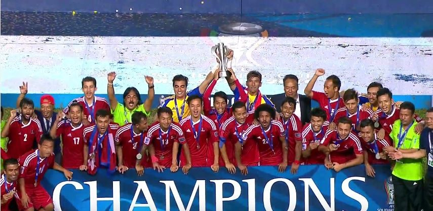

ALL NEPAL FOOTBALL ASSOCIATION

1921年のラナ政権時代に、サッカーの参入と最初のスタートアップがネパールで行われました。サッカーは、他の国からこのゲームを学んだ若い選手たちによってネパールで紹介されました。サッカー常に多くの観客に見られ、当時非常に有名になりました。
サッカーネパール代表は、ネパールサッカー協会（ANFA）によって編成されるネパールのサッカーのナショナルチームである。ホームスタジアムは首都、カトマンズにあるダサラス・ランガシャラ・スタジアム。2016年4月より、日本サッカー協会からの派遣で行徳浩二が監督を務めている。 。